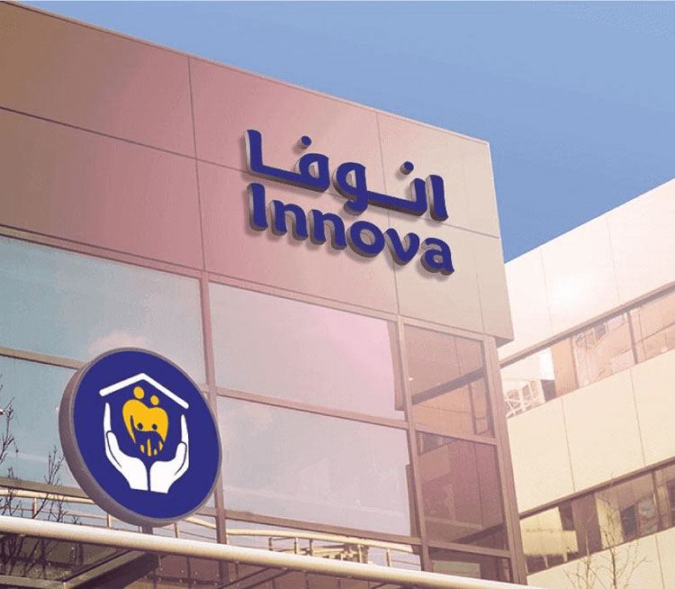

News Highlights
SICO Continues to Achieve Record-Breaking Growth in AUM
Over the course of the past year, SICO has successfully increased its assets under management (AUM) both organically and inorganically. At year-end 2021 AUM had increased by 76% to reach USD 4.1 billion net, compared with USD 2.3 billion recorded at year-end 2020. In addition to doubling AUM, the Asset Management division managed to deliver significant growth in net fee income driven by newly secured mandates and by the strong performance of SICO’s funds and portfolios that invest across all asset classes, including equities, fixed-income, revenue generating real estate, and short-term money market instruments.
The momentum continued in the first quarter of 2022. On a gross basis (including leverage) SICO’s AUM increased by 9% to USD 4.9 billion as of 31 March 2022. On a net basis (excluding leverage), total AUM increased by 8% to USD 4.5 billion. The growth was driven by additional mandates and subscriptions to funds across asset classes and the continued outperformance of SICO’s assets under management mandates and funds.
SICO Expands Board with Tenth Seat Allocated to Bank Muscat
SICO expanded the size of its Board of Directors to ten members from nine in January 2022 when Shaikh Waleed Khamis Al Hashar, CEO of Bank Muscat, joined the Board as non-independent Executive Director of the Bank. Bank Muscat, which owns a 10.38% stake in SICO, nominated Shaikh Waleed as its representative on the SICO Board after obtaining all required approvals from the regulator. The move came after SICO acquired a majority stake via share swap in the Saudi-based “Muscat Capital” in 2021.
The newly acquired financial services firm has since been rebranded as “SICO Capital.” Today, SICO Capital has already started to successfully capitalize on the increased market activity in Saudi Arabia and has allowed SICO to expand the breadth of its service offering in the region’s largest market.
New Middle Office Function is Created to Enhance Efficiency and Deliver Better Service to Clients
SICO has introduced a separate middle office function, that is independent of front office equities and fixed income asset management activities. This new function is particularly important given the trajectory of SICO’s AUM growth, which now stands at USD 4. 9 billion (gross) and USD 4.5 billion (net) as of March 2022, and the ongoing expansion in the number of its institutional clients. SICO engaged a reputable third-party specialist, ORC, a London based boutique advisory services firm, to independently review SICO’s organizational structure and carve out an independent middle office functionality that can create the required degree of autonomy and segregation in SICO’s asset management organizational structure. This new segregated institutional approach will align operations with international best practices and help the asset management division to become more efficient and delivery better service to clients.
SICO’s Bahrain Liquidity Fund Concludes 2021 with Positive Returns of 11.4%
SICO’s Bahrain Liquidity Fund (BLF), now in its sixth year, has continued to make a major impact on the average daily traded volume (ADTV) of the Bahrain Bourse, which has reached BD 800,000 in 2021.
Commenting on the track record and performance of the Fund, Fadhel Makhlooq, SICO’s Chief Capital Markets Officer, said, “The Fund had a positive impact on the BHB despite its reduced size, resulting from paying back in cash a total of 20% of the fund’s size to its shareholders.”
BLF transactions in 2021 represented 34% of the total ADTV on the Bourse compared to the 30% recorded in 2020. The increase in the participation rate over the past year is a clear manifestation of the Fund’s role as a liquidity enhancer during liquidity downturn. In terms of returns, the BLF has generated an annual return on capital of 11.37%, the highest return since the inception of the Fund. This return includes cash paid back to the Fund’s unitholders.
SICO Launches Money Market Fund in Bahrain
SICO Capital has launched its Money Market Fund in Bahrain which will allow clients to generate more interest income than a conventional savings account, while providing them with daily liquidity. The Fund invests in a mix of low-risk, short-term Shariah compliant deposits and treasury bills in the GCC and has generated 2.6% returns per year over the last three years. With a minimum cash deposit of USD 100,000 in SAR equivalent, clients can get the same benefits as a fixed deposit account with higher rates, low risk, and better liquidity. The SICO Capital Money Market Fund is regulated by the Saudi Capital Markets Authority.
SICO Capital Signs Agreement to Acquire Commercial Property in Riyadh for SAR 448 million
SICO Capital, manager of the SICO Saudi REIT Fund, signed an agreement to acquire a commercial property in Riyadh for SAR 448 million, excluding real estate tax, and pursuit and acquisition expenses.
The property will be financed through an in-kind contribution of SAR 148 million from the seller, which constitutes 33% of the total value. In addition, SAR 300 million will be paid in cash through bank credit facilities arranged by the SICO Saudi REIT Fund.
Spanning a land area of 11,489 sqm, with a built-up area of 36,495 sqm, the new property is located in Riyadh’s Hittin District which is home to offices, restaurants and cafes. The property, which will become operational in April 2023 has an occupancy rate of 100 offering a total rental income of SAR 31.5 million annually.
The acquisition is poised to positively impact the fund’s returns, offering geographic diversification within property portfolios to boost the fund’s yield and footprint across Riyadh. The agreement is still subject to and conditional upon the completion of a satisfactory due diligence process.

SICO Capital Completes Private Placement for Innova Healthcare in KSA
SICO Capital completed a private placement transaction that sold 75% of the shares of Saudi Innova Healthcare Company to Osool El Furas Company Ltd. Acting in its capacity as the sole financial advisor to Saudi Innova Healthcare, SICO Capital’s Investment Banking team, prepared all documentation, financial applications, and the private placement memorandum (PPM) for the successful completion of the transaction. The mandate comprised of two phases, phase one involved a “Strategic Alternatives Evaluation” for the company and based on the financial, strategic, and qualitative considerations, the decision was made to opt for an equity sale. The second phase was the execution of the sell-side transaction wherein SICO Capital evaluated multiple offers to select the buyer based on various parameters.
SFS Becomes a One Stop Shop with Full Bouquet of Automated Services
The management team of SICO Funds Services B.S.C (c) “SFS” successfully completed the transformation of SFS into a full-fledged service provider with fully automated processes for client services. SFS has revamped its business model into a more modern, agile and scalable structure that can seamlessly adapt and accommodate dynamic market conditions and evolving client needs.
“One of our greatest achievements is that we have been able to enrich our service offering and become one-stop-shop offering a wide range of support services to our diverse client base of investment funds, private portfolios, family offices and other structured financial products, all under one roof,” said SFS CEO, Naser Obeid.
SFS has also recently launched a new fully integrated IT system that has enhanced client services and deliverables. The new system’s unique reporting capabilities has enabled the creation of tailor-made reports that are easily accessible to clients through a sophisticated online portal.
SICO Financial Brokerage to Offer a 50% Discount on Trading Fees for People of Determination
SICO’s UAE subsidiary, SICO Financial Brokerage, launched an initiative granting people of determination a 50% discount on the company’s trading fees for all types of transactions. It’s one of many initiatives that SICO Financial Brokerage plans on undertaking to expand its customer base, all the while fulfilling its social responsibility towards fostering financial inclusion in the country. The move will help increase access to financial services and advance economic progress among marginalized societies which can ultimately build more resilient communities.

SICO Awarded Best Broker in Bahrain During the Arab Federation of Capital Markets (AFCM) Conference 2022
SICO sponsored The Arab Federation of Capital Markets (AFCM) Annual Conference 2022, which was held virtually from March 29-30, 2022. The AFCM awarded SICO the Best Broker in Bahrain 2022. SICO was represented at the conference by Ali Marshad, Head of Fixed Income Asset Management, who spoke on a panel entitled ‘Shape of the Debt Capital Markets Across MENA: Where are we headed?’. The panel discussed a range of topics, including emerging bond markets, DCM developments, local and international investment risks, core bond strategies, and digitisation.